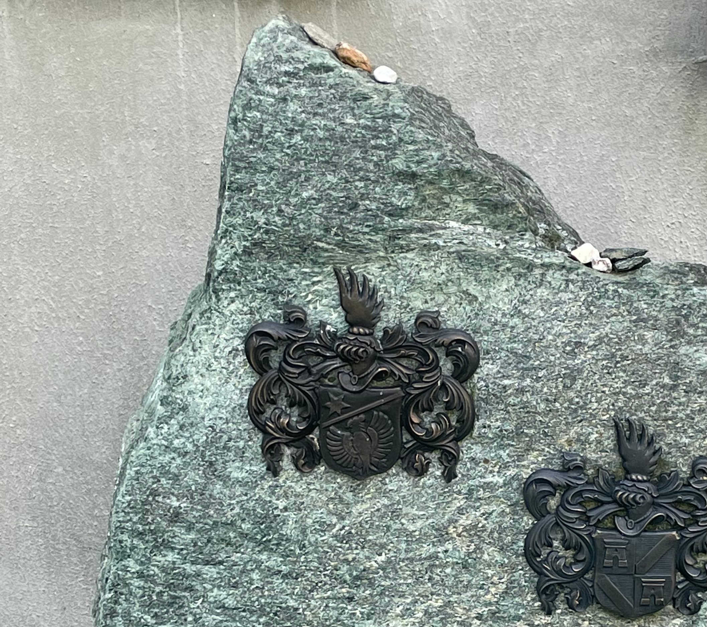
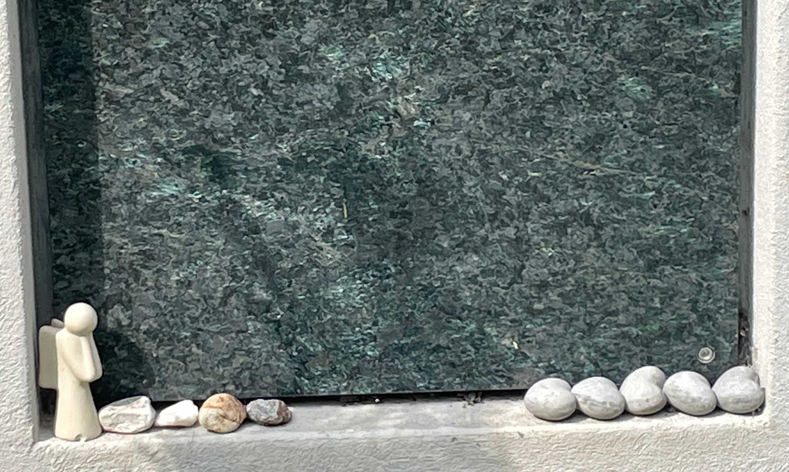

Poschiavo im Winter
(Hildesheimers Grab)
War alles zugeschneit,
in dieser Welt
aus Stein kein Stein
zuhanden.
Wir legten einen
Schneeball
auf dein Grab.
Peter Horst Neumann
Die Erfindung der Schere,
Bargfeld 1999
Ein Schneeball auf einem Grab? Die Begebenheit, die der Lyriker und Literaturwissenschaftler Peter Horst Neumann (1936–2009) skizziert, zeugt von Kreativität: Auf dem verschneiten Friedhof inmitten des Puschlaver Städtchens kann der Besucher keinen Stein finden, um ihn, einem jüdischen Brauch folgend, auf das Grab seines Freundes Wolfgang Hildesheimer (1916–1991) zu legen. Und formt stattdessen einen Schneeball. Schneebälle, die auf Grabsteinen liegen, sind auf dem Friedhof der reformierten Gemeinde in Poschiavo nicht gang und gäbe. Steinchen hingegen schon – und dies längst nicht mehr nur auf dem Grab des jüdischen Schriftstellers und Künstlers Wolfgang Hildesheimer.

Grab des Ehepaars Wolfgang und Silvia Hildesheimer in Poschiavo. (Bild: Valérie Rhein)
Jüdischer Brauch
Wer schon einmal auf einem jüdischen Friedhof war, kennt den Brauch: Besucherinnen und Besucher pflegen einen kleinen Stein auf den Grabstein von Verwandten, Freunden oder Bekannten zu legen. Für dieses weitverbreitete Ritual gibt es eine Reihe von Erklärungen. Die Steinchen auf dem Grab stammen möglicherweise aus Zeiten, als grosse Grabsteine nicht üblich waren und die kleinen Steine als Markierung des Grabs dienten. Häufig sind sie auch Ausdruck einer Ehrerweisung gegenüber den Verstorbenen. Was auch immer der Ursprung der Steinchen auf Grabsteinen sein mag: Es handelt sich dabei um einen Brauch und nicht um eine religiöse Vorschrift.
Neue lokale Tradition
Auf die kleinen Steinchen auf den Grabsteinen des reformierten Friedhofs werden so manche Puschlav-Reisende aufmerksam. Auch Antonio Di Passa (*1961) sind sie aufgefallen, als er im Sommer 2000 als Pfarrer neu ins Tal kam. Damals seien sie allerdings vorwiegend auf dem Grab von Wolfgang Hildesheimer gelegen, erinnert sich Di Passa 21 Jahre später im August 2021, kurz vor seiner Pensionierung. Mit der Zeit habe er die Steinchen aber auf immer mehr Gräbern beobachtet.
Steinchen gibt es mittlerweile auch auf Grabsteinen alteingesessener Puschlaver Familien. (Bild: Valérie Rhein)
Steinchen gibt es mittlerweile auch auf Grabsteinen alteingesessener Puschlaver Familien. (Bild: Valérie Rhein)
Diese Beobachtung machen auch andere Bewohnerinnen und Bewohner des Tals: Was Besuchende am Grab des prominenten Wahl-Puschlavers zu tun pflegten, taten nach und nach auch andere Familien am Grab ihrer Verstorbenen. So ist es in einer aus Cavaglia stammenden Familie beispielsweise üblich geworden, im Heimatdorf Steinchen zu sammeln und diese in Poschiavo auf den Grabstein von Verwandten zu legen. Während einzelne Einheimische diesen Brauch inzwischen als althergebracht betrachten, sehen andere die Steinchen auf den Gräbern als Nachahmung des jüdischen Rituals. Für Letzteres spricht, dass es weder im Tal noch anderswo in der Schweiz üblich ist, auf reformierten Friedhöfen Steinchen auf Grabsteine zu legen.
Viel beachtete Prominenz
Weshalb aber in Poschiavo? Eine mögliche Antwort könnte lauten: Weil dort mit Wolfgang Hildesheimer ein prominenter Jude begraben liegt. Und weil dem Grab bekannter Persönlichkeiten mehr Beachtung geschenkt wird als dem Grab von Menschen, die nicht in der Öffentlichkeit standen. Auf vielen reformierten Friedhöfen sind einzelne Jüdinnen und Juden begraben. Doch selbst wenn auf deren Grabsteinen kleine Steinchen liegen, wird dieser Brauch in der Regel nicht nachgeahmt. Ein Indiz dafür, dass die Bekanntheit von Verstorbenen für das Nachahmen von Ritualen bedeutsam sein könnte, lässt ein Besuch auf dem Dorotheenstädtischen Friedhof in Berlin Mitte vermuten. Mehrere prominente Juden sind dort begraben, darunter etwa George Tabori (1914–2007). Und wie in Poschiavo lassen sich auf dem Dorotheenstädtischen Friedhof auch auf Grabsteinen nichtjüdischer Verstorbener häufig kleine Steinchen finden. Das gilt auch für Gräber bekannter Persönlichkeiten wie Bertolt Brecht (1898–1956), Christa Wolf (1929–2011) oder Johannes Rau (1931–2006).

Blick auf den Friedhof der reformierten Gemeinde Poschiavo mit der Kirche Santa Trinità rechts und der katholischen Stiftskirche San Vittore links. (Bild: Valérie Rhein)
Hildesheimers Puschlaver Jahre
Wolfgang Hildesheimer, 1916 in Hamburg geboren, emigrierte 1933 nach Palästina. Nach Aufenthalten in Grossbritannien und im Nachkriegsdeutschland liess er sich gemeinsam mit seiner Frau Silvia Hildesheimer (1917–2014) 1957 in Poschiavo nieder. Dort widmete er sich seiner Arbeit als Schriftsteller und später als Bildender Künstler. 1982 verlieh ihm die Gemeinde Poschiavo die Ehrenbürgerschaft. 1991 ist Wolfgang Hildesheimer in seiner Wahlheimat gestorben. Der Friedhof, auf dem er begraben ist, liegt neben der Kirche Santa Trinità. Diese ist Mitte des 17. Jahrhunderts erbaut worden und befindet sich wenige Schritte von der katholischen Stiftskirche San Vittore und der Piazza entfernt.
Als die Glocken der beiden Kirchen zum ersten Mal gemeinsam läuteten
Das Zusammenleben der katholischen Mehrheit und der reformierten Minderheit im südbündnerischen, zwischen Berninapass und Veltlin gelegenen Tal war während Jahrhunderten von Konflikten geprägt. Längst ist das passé, Kooperation und gegenseitiger Respekt haben die Kontroversen abgelöst. Auch als Wolfgang Hildesheimer starb, reichten sich die beiden Konfessionen im Tal die Hand. Der Schriftsteller Urs Widmer (1938–2014) schilderte dazu in seinem Essay «Fragmentarisches Alphabet zur Schweizer Literatur» eine nicht alltägliche Begebenheit. Im Abschnitt zu Hildesheimer hielt er fest: «Als er begraben wurde, läuteten – für ihn als Juden! – zum ersten Mal in der Geschichte des Tals die Glocken der katholischen und protestantischen Kirchen gemeinsam» (Urs Widmer in Literatur in der Schweiz, Text + Kritik 1998, S. 10).
Valérie Rhein ist Judaistin. Sie lebt in Basel, lehrt in Luzern und verbringt ihre Ferien im Puschlav.
Weitere Artikel von {{ author.author }} finden Sie hier:
Zur Vertiefung:
- Batz, Hans: Die Kirchen und Kapellen des Kantons Graubünden, Band I, Chur 2003.
- Hildesheimer, Silvia (Hg.): Wolfgang Hildesheimer. Schönheit als Therapie. Bilder gegen die Verzweiflung, Frankfurt a.M. 1996.